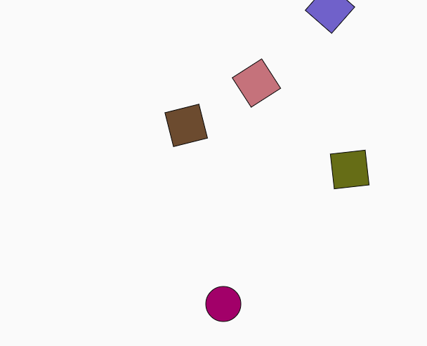

Final Project Prototype Writeup
Overview and Usage:
Block Destructor is a game created using p5.js and p5play. This is a prototype version of a soon-to-be more advanced version with greater user customizability.
In this game, blocks come in random directions at random speeds (within a range), and a player has to move to the end without hitting the blocks.
Once they do, they will reach a new level and can keep levelling up until they hit a block.
How to play:
1. Click anywhere on the loading screen to start
2. Use the left, right, and up arrow keys to move the player
3. Try to reach the top of the screen
4. Avoid the blocks - hit them and you lose
5. Try to beat your highest score!
Click here to access the game
Click here for the repo
Development Process:
1. I set up my p5js file with the p5play template
2. I created the player sprite
3. I created variables for blocks and added blocks coming from different directions
4. I added the instructions and game over screens
5. I called the screens by creating a mousePressed() function
6. Deployed my game to GitHub
WIP Screenshot

Issue Deep-Dive:
One issue I encountered was that the file would not run when I was trying to deploy it to GitHub (showed a blank screen)
I fixed this by using "Inspect Element" on the page, and realized there was an error in one of the scripts that I didn't need (p5 sound library), so I removed that.
I also added treeshake: false to my rollup configuration.
Ideas and Future Work:
- User can customize player
- Make blocks move faster as player levels up
- Add more blocks as player levels up
- Pause and restart buttons
- Allow user to change styling
Project scope: How has your project scope changed now that you have completed your prototype? What features have been added/removed to/from your anticipated final project?
I want to keep the game at a static screen, but just add levels that increase in difficulty instead, because I wasn't sure how to get the player sprite to start inching toward the bottom
as time passed, and I wasn't sure how to extend my screen as the player moved up. I like this idea better though, as I have the ability to add more components.
Time management: How did the amount of time you spent building your prototype compare to your initial plan? Were there any unanticipated roadblocks or setbacks?
The prototype took longer than anticipated and I still need to connect Firebase to a scoreboard as I intended in my project, which I will refine in my final project.
Implementation plan: How has your implementation plan for your final version changed now that you have completed your prototype? Why has it changed?
I need to spend more time on the Firebase portion and I also want to focus more on styling and customization. I will make style changes to my game first and foremost, and add a leaderboard, along with
pause and restart buttons so the experience is more game-like.